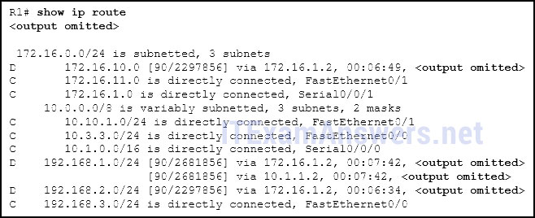

1.¿Qué característica de la capa de red en el modelo OSI permite transportar paquetes para múltiples tipos de comunicaciones entre muchos hosts?
- la capacidad de operar sin tener en cuenta los datos que se llevan en cada paquete *
- La desencapsulación de los encabezados de las capas inferiores.
- La selección de rutas y paquetes directos hacia el destino.
- La capacidad de gestionar el transporte de datos entre procesos que se ejecutan en hosts.
- @javi__super
Explique:
la función de los protocolos de capa de red especifica la estructura de paquetes y el procesamiento utilizado para llevar los datos de un host a otro host. Los datos de comunicación reales están encapsulados en la PDU de la capa de red. La característica de su operación, independientemente de los datos transportados en cada paquete, permite a la capa de red transportar paquetes para múltiples tipos de comunicaciones.
2.¿Cuáles son dos características de la propiedad intelectual? (Escoge dos.)
- no requiere una conexión dedicada de extremo a extremo *
- opera independientemente de los medios de la red *
- retransmite paquetes si ocurren errores
- vuelve a ensamblar los paquetes desordenados en el orden correcto en el extremo del receptor
- @javi__super
Explique:
El Protocolo de Internet (IP) es un protocolo de mejor esfuerzo, sin conexión. Esto significa que IP no requiere una conexión de extremo a extremo ni garantiza la entrega de paquetes. IP también es independiente de los medios, lo que significa que funciona independientemente de los medios de la red que transportan los paquetes.
3.Cuando se utiliza un protocolo sin conexión en una capa inferior del modelo OSI, ¿cómo se detectan los datos faltantes y se retransmiten si es necesario?
- Los protocolos orientados a la conexión de la capa superior realizan un seguimiento de los datos recibidos y pueden solicitar la retransmisión de los protocolos de nivel superior en el host de envío. *
- Los acuses de recibo sin conexión se utilizan para solicitar la retransmisión.
- Los protocolos IP de capa de red administran las sesiones de comunicación si los servicios de transporte orientados a la conexión no están disponibles.
- El proceso de entrega de mejor esfuerzo garantiza que se reciban todos los paquetes que se envían.
- @javi__super
Explique:
cuando los protocolos sin conexión están en uso en una capa inferior del modelo OSI, es posible que los protocolos de nivel superior tengan que trabajar juntos en los hosts de envío y recepción para tener en cuenta y retransmitir los datos perdidos. En algunos casos, esto no es necesario, porque para algunas aplicaciones es tolerable una cierta cantidad de pérdida de datos.
4.¿Qué campo en el encabezado de IPv4 se usa para evitar que un paquete atraviese una red sin fin?
- Tiempo para vivir *
- Secuencia de números
- Número de acuse de recibo
- Servicios diferenciados
- @javi__super
Explicación:
el valor del campo Tiempo de vida (TTL) en el encabezado de IPv4 se usa para limitar la vida útil de un paquete. El host de envío establece el valor TTL inicial; que se reduce en uno cada vez que el paquete es procesado por un enrutador. Si el campo TTL se reduce a cero, el enrutador descarta el paquete y envía un mensaje de tiempo excedido del Protocolo de mensajes de control de Internet (ICMP) a la dirección IP de origen. El campo Servicios diferenciados (DS) se usa para determinar la prioridad de cada paquete. El Número de secuencia y el Número de acuse de recibo son dos campos en el encabezado TCP.
5.¿Qué campo de encabezado de IPv4 identifica el protocolo de capa superior transportado en el paquete?
- Protocolo *
- Identificación
- Versión
- Servicios diferenciados
- @javi__super
Explicar:
es el campo Protocolo en el encabezado IP el que identifica el protocolo de capa superior que lleva el paquete. El campo Versión identifica la versión de IP. El campo Servicios diferenciales se usa para establecer la prioridad de paquetes. El campo de identificación se utiliza para reordenar paquetes fragmentados.
6.¿Cuál es una de las ventajas que ofrece el encabezado simplificado de IPv6 sobre IPv4?
- manejo eficiente de paquetes *
- encabezado de menor tamaño
- Poco requerimiento para procesar sumas de comprobación.
- Direcciones IP de origen y destino de menor tamaño
- @javi__super
Explique:
El encabezado simplificado de IPv6 ofrece varias ventajas sobre IPv4:
· Mejor eficiencia de enrutamiento y manejo eficiente de paquetes para el rendimiento y la escalabilidad de la tasa de reenvío
· No hay requisitos para procesar sumas de comprobación
· Mecanismos de encabezado de extensión simplificados y más eficientes (en oposición al campo Opciones de IPv4)
· Un campo Etiqueta de flujo para el procesamiento por flujo sin necesidad de abrir el paquete interno de transporte para identificar los distintos flujos de tráfico
7.Consulte la presentación. ¿Qué ruta de la tabla de enrutamiento de PC1 se utilizará para llegar a PC2?
- A
- SEGUNDO
- DO
- RE
- Respuesta correcta: A *
- @javi__super
Explique:
PC1 y PC2 están en la red 192.168.10.0 con la máscara 255.255.255.0, por lo que no es necesario acceder a la puerta de enlace predeterminada (entrada 0.0.0.0 0.0.0.0). La entrada 127.0.0.1 255.255.255.255 es la interfaz de bucle invertido y la entrada 192.168.10.10 255.255.255.255 identifica la interfaz de dirección PC1.
8.Consulte la presentación. R1 recibe un paquete destinado a la dirección IP 192.168.2.10. ¿Qué interfaz reenviará R1 el paquete?
-

- Serial0 / 0/1 *
- Serial0 / 0/0
- FastEthernet0 / 1
- FastEthernet0 / 0
- @javi__super
9.¿Qué tipo de ruta se indica con el código C en una tabla de enrutamiento IPv4 en un enrutador Cisco?
- ruta conectada directamente *
- ruta estática
- Ruta por defecto
- Ruta dinámica que se aprende a través de EIGRP.
- @javi__super
10.¿Qué entrada de la tabla de enrutamiento tiene una dirección de siguiente salto asociada con una red de destino?
- rutas remotas *
- rutas conectadas directamente
- rutas locales
- Rutas fuente C y L
- @javi__super
Explicación:
las
entradas de la tabla de enrutamiento para rutas remotas tendrán una dirección IP de siguiente salto. La dirección IP del siguiente salto es la dirección de la interfaz del enrutador del siguiente dispositivo que se utilizará para llegar a la red de destino. Las rutas locales y conectadas directamente no tienen siguiente salto, ya que no requieren pasar por otro enrutador para ser alcanzadas.
11.¿Qué declaración describe una característica de hardware de un enrutador Cisco 1941 que tiene la configuración de hardware predeterminada?
- Tiene dos tipos de puertos que se pueden usar para acceder a la consola. *
- No tiene un puerto AUX.
- Cuenta con tres interfaces FastEthernet para acceso LAN.
- No requiere una CPU porque se basa en Compact Flash para ejecutar el IOS.
- @javi__super
12.Siguiendo la configuración predeterminada, ¿cuál es el siguiente paso en la secuencia de inicio del enrutador después de que el IOS se cargue desde la memoria flash?
- Localice y cargue el archivo de configuración de inicio desde la NVRAM. *
- Realizar la rutina POST.
- Cargue el programa bootstrap desde la ROM.
- Cargue el archivo de configuración en ejecución desde la RAM.
- @javi__super
Explicación:
Hay tres pasos principales para la secuencia de inicio del enrutador:
Realizar la autoprueba de encendido (POST)
Cargar el IOS desde el servidor Flash o TFTP
Cargar el archivo de configuración de inicio desde la NVRAM
13.¿Cuáles son dos tipos de interfaces de enrutador? (Escoge dos.)
- LAN *
- PÁLIDO *
- DHCP
- Telnet
- @javi__super
14.¿Qué dos elementos de información se encuentran en la memoria RAM de un enrutador Cisco durante el funcionamiento normal? (Escoge dos.)
- Cisco IOS *
- Tabla de enrutamiento IP *
- software de diagnóstico básico
- archivo de configuración de inicio
- @javi__super
Explique:
el archivo IOS de Cisco se almacena en la memoria flash y se copia en la RAM durante el arranque. La tabla de enrutamiento IP también se almacena en la memoria RAM. El software de diagnóstico básico se almacena en la ROM y el archivo de configuración de inicio se almacena en la NVRAM.
15.Un enrutador arranca y entra en modo de configuración. ¿Cuál es la razón para esto?
- Falta el archivo de configuración de la NVRAM. *
- La imagen de IOS está corrupta.
- Cisco IOS no se encuentra en la memoria flash.
- El proceso POST ha detectado un fallo de hardware.
- @javi__super
16.¿Cuál es el propósito del archivo de configuración de inicio en un enrutador Cisco?
- para contener los comandos que se utilizan para configurar inicialmente un enrutador en el inicio *
- Facilitar el funcionamiento básico de los componentes de hardware de un dispositivo.
- para contener los comandos de configuración que el router IOS está utilizando actualmente
- para proporcionar una versión de respaldo limitada del IOS, en caso de que el enrutador no pueda cargar el IOS completo
- @javi__super
Explicación:
el archivo de configuración de inicio se almacena en la NVRAM y contiene los comandos necesarios para configurar inicialmente un enrutador. También crea el archivo de configuración en ejecución que se almacena en la memoria RAM.
17.¿Qué tres comandos se utilizan para configurar el acceso seguro a un enrutador a través de una conexión a la interfaz de la consola? (Elige tres.)
- línea consola 0 *
- interfaz fastethernet 0/0
- contraseña cisco *
- iniciar sesión *
- @javi__super
18.¿Qué característica describe una mejora de IPv6 sobre IPv4?
- El encabezado de IPv6 es más simple que el encabezado de IPv4, lo que mejora el manejo de paquetes. *
- Las direcciones IPv6 se basan en un direccionamiento plano de 128 bits en lugar de IPv4 que se basa en un direccionamiento jerárquico de 32 bits.
- Tanto IPv4 como IPv6 admiten la autenticación, pero solo IPv6 admite capacidades de privacidad.
- El espacio de direcciones IPv6 es cuatro veces más grande que el espacio de direcciones IPv4.
- @javi__super
Explique:
las direcciones IPv6 se basan en un direccionamiento jerárquico de 128 bits, y el encabezado de IPv6 se ha simplificado con menos campos, mejorando el manejo de paquetes. IPv6 admite de forma nativa las capacidades de autenticación y privacidad en lugar de IPv4 que necesita funciones adicionales para admitirlas. El espacio de direcciones IPv6 es mucho más grande que el espacio de direcciones IPv4.
19.Abra la actividad PT. La contraseña habilitada en todos los dispositivos es cisco. Realice las tareas en las instrucciones de la actividad y luego responda la pregunta. ¿Por qué razón está ocurriendo la falla?
- SW1 no tiene una puerta de enlace predeterminada configurada. *
- La dirección IP de SW1 está configurada en una subred incorrecta.
- PC2 tiene una puerta de enlace predeterminada incorrecta configurada.
- ca
- @javi__super
Explique:
Falta el comando ip default-gateway en la configuración de SW1. Los paquetes de PC2 pueden alcanzar el SW1 con éxito, pero SW1 no puede reenviar paquetes de respuesta más allá de la red local sin que se haya emitido el comando ip default-gateway.
20.Haga coincidir el comando con el modo del dispositivo en el que se ingresa el comando. (No se utilizan todas las opciones).
- Pregunta
- Respuesta
- @javi__super
Explicación:
el comando de habilitación se ingresa en el modo R1>. El comando de inicio de sesión se ingresa en el modo R1 (config-line) #. El comando copy running-config startup-config se ingresa en el modo R1 #. El comando de la dirección IP 192.168.4.4 255.255.255.0 se ingresa en el modo R1 (config-if) #. El comando de cifrado de contraseña de servicio se ingresa en el modo de configuración global.
21.Cuando los protocolos sin conexión se implementan en las capas más bajas del modelo OSI, ¿qué se suele utilizar para confirmar el recibo de los datos y solicitar la retransmisión de los datos faltantes?
- Protocolos orientados a la conexión de capa superior *
- reconocimientos sin conexión
- Protocolos IP de capa de red
- Protocolos UDP de la capa de transporte
- @javi__super
22.¿Qué campo de encabezado de IPv4 es responsable de definir la prioridad del paquete?
- servicios diferenciados *
- etiqueta de flujo
- banderas
- clase de tráfico
- @javi__super
23.¿Por qué no se necesita NAT en IPv6?
- ¿Cualquier host o usuario puede obtener una dirección de red pública de IPv6 porque el número de direcciones IPv6 disponibles es extremadamente alto?
- Debido a que IPv6 tiene seguridad integrada, no es necesario ocultar las direcciones IPv6 de las redes internas.
- Los problemas inducidos por las aplicaciones NAT se resuelven porque el encabezado de IPv6 mejora el manejo de paquetes por parte de los enrutadores intermedios.
- Los problemas de conectividad de extremo a extremo causados por NAT se solucionan porque el número de rutas aumenta con el número de nodos que están conectados a Internet.
- @javi__super
24.¿Qué es un servicio proporcionado por el campo Etiqueta de flujo del encabezado de IPv6?
- Informa a los dispositivos de red para mantener la misma ruta para los paquetes de aplicaciones en tiempo real. *
- Limita la vida útil de un paquete.
- Identifica la longitud total del paquete IPv6.
- Clasifica los paquetes para el control de congestión de tráfico.
- @javi__super
25.¿Cómo aseguran los hosts que sus paquetes se dirigen al destino de red correcto?
- ¿Tienen que mantener su propia tabla de enrutamiento local que contiene una ruta a la interfaz de bucle invertido, una ruta de red local y una ruta predeterminada remota?
- Siempre dirigen sus paquetes a la puerta de enlace predeterminada, que será responsable de la entrega del paquete.
- Buscan en su propia tabla de enrutamiento local una ruta a la dirección de destino de la red y pasan esta información a la puerta de enlace predeterminada.
- Envían un paquete de consulta a la puerta de enlace predeterminada que solicita la mejor ruta.
- @javi__super
26.¿Qué dos comandos se pueden usar en un host de Windows para mostrar la tabla de enrutamiento? (Escoge dos.)
- impresión de la ruta *
- netstat -s
- netstat -r *
- mostrar ruta ip
- @javi__super
27.Durante el proceso de reenvío de tráfico, ¿qué hará el enrutador inmediatamente después de hacer coincidir la dirección IP de destino con una red en una entrada de la tabla de enrutamiento conectada directamente?
- cambiar el paquete a la interfaz directamente conectada *
- buscar la dirección del siguiente salto para el paquete
- Descartar el tráfico tras consultar la tabla de rutas.
- analizar la dirección IP de destino
- @javi__super
28.Un técnico está configurando un enrutador que se está ejecutando activamente en la red. De repente, el poder del enrutador se pierde. Si el técnico no ha guardado la configuración, ¿qué dos tipos de información se perderán? (Escoge dos.)
- tabla de ruteo *
- Archivo de imagen Cisco IOS
- Caché ARP *
- archivo de arranque
- @javi__super
29.¿Cuáles dos interfaces permitirán el acceso a través de las líneas VTY para configurar el enrutador? (Escoge dos.)
- interfaces auxiliares
- Interfaces LAN *
- Interfaces WAN *
- @javi__super
30.¿Qué dos archivos, si se encuentran, se copian en la RAM cuando se inicia un enrutador con la configuración de registro de configuración predeterminada? (Escoge dos.)
- Archivo de imagen IOS *
- configuración en ejecución
- configuración de inicio *
- Diagnóstico POST
- @javi__super
31.¿Cuándo se usará la imagen de Cisco IOS que se encuentra en la ROM para iniciar el enrutador?
- cuando no se puede encontrar el IOS completo *
- durante una operación de transferencia de archivos
- durante un proceso de arranque normal
- Cuando la configuración en ejecución le indica al enrutador que haga esto
- @javi__super
32.Después de solucionar el problema de un enrutador, el administrador de red desea guardar la configuración del enrutador para que se use automáticamente la próxima vez que se reinicie el enrutador. ¿Qué orden se debe emitir?
- copia running-config startup-config *
- recargar *
- Copiar el flash de configuración de inicio
- copia de ejecución de configuración de flash
- @javi__super
33.¿Qué tres comandos se usan para configurar una contraseña para una persona que conecta un cable a un nuevo enrutador para que se pueda realizar una configuración inicial? (Elige tres.)
- línea consola 0 *
- iniciar sesión *
- contraseña cisco *
- habilitar cisco secreto
- @javi__super
34.¿Qué afirmación sobre las interfaces del enrutador es cierta?
- Una interfaz de enrutador configurada y activada debe estar conectada a otro dispositivo para poder funcionar. *
- Los comandos que aplican una dirección IP y una máscara de subred a una interfaz se ingresan en el modo de configuración global.
- Una vez que se da el comando de no apagar, la interfaz del enrutador está activa y operativa. *
- Las interfaces LAN del enrutador no están activadas de forma predeterminada, pero las interfaces WAN del enrutador sí lo están.
- @javi__super
35.Consulte la presentación. Rellena el espacio en blanco.
- @javi__super
.png)
Un paquete que sale de PC-1 tiene que atravesar 3 saltos para alcanzar PC-4.
36.Rellena el espacio en blanco.
- En un enrutador, la ROM es la memoria no volátil donde se almacenan el software de diagnóstico, las instrucciones de inicio y un IOS limitado.
- @javi__super